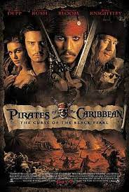
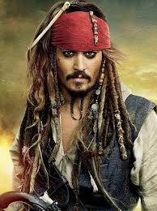

Piratas Do Caribe
Jhonny Depp atuou no papel de capitão Jack Sparrow, na sequência de filmes
"piratass do caribe", a qual teve seu primeiro filme lançado em 29 de agosto de 2003.
A franquia "piratas do caribe" teve mais 4 continuações, lançadas nos anos de:
2006, 2007, 2011 e a mais recente, lançada em 2017.
O papel de Jack Sparrow foi responsável por grande parte do reconhecimento recebido
por Jhonny Depp, gerando-o diversos prêmios e uma grande quantia de dinheiro.
Sendo esse um dos papeis mais marcantes e bem feitos de Depp, ele gerou um
grande boom na carreira do ator, o popularizando muito, abrindo portas para outros
papéis importantes.
Sua participação na sequência de filmes foi interrompida, graças a um processo
pelo qual o ator passou com sua ex-esposa, Ember Heard.
As gravações de "piratas do caribe 6" começam no ano de 2023 e não
há confirmação da presença de Jhonny, como capitão Jack, porém é muito
provavel que ele volte sim, para estrelar mais uma vez esse papel
que foi tão marcante em sua carreira.